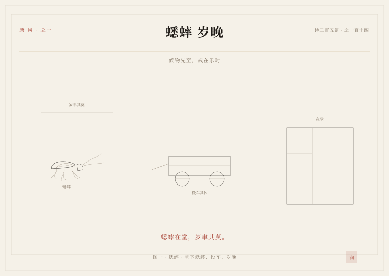
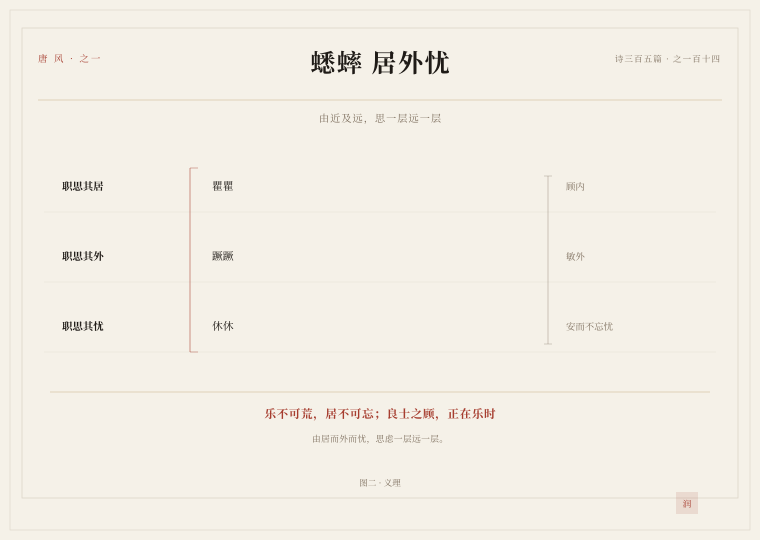

第一百十四篇 蟋蟀
唐风 · 之一 SJ114
朗读 · 普通话
依经文原文朗读，章次不读出；配古琴底乐，不改速、不加拖腔。全库同一音色（豆包 TTS），非播音员录制。
一 解题
诗三判：
- 谁在说：晋地大夫（一说国人）。岁暮蟋蟀在堂，役车已休，劝君及时为乐，又戒其乐不可荒。
- 说什么事：三章只换莫/逝/休、除/迈/慆、居/外/忧、瞿瞿/蹶蹶/休休。一边叹岁晚当乐，一边顾念职守；乐是皮，戒是骨。
- 为何编在此：魏风七篇终以“去”，唐风开篇即以“戒”。魏音近亡，唐俗勤俭忧深；此诗是一卷之先声，不与魏风同调。
《毛序》：“《蟋蟀》，刺晋僖公也。俭不中礼，故作是诗以闵之，欲其及时以礼自虞乐也。此晋也，而谓之唐，本其风俗，忧深思远，俭而用礼，乃有尧之遗风焉。”
朱子《诗集传》：“赋也。蟋蟀，虫名，似蝗而小，正黑，有光泽如漆，有角翅，或谓之促织，九月在堂。聿，遂。莫，晚。除，去也。大康，过于乐也。职，主也。瞿瞿，却顾之貌。”
本库的看法：《蟋蟀》是一首把“乐”写成“戒”的诗。
前四句叹岁暮不乐则日月弃人，是劝；后四句“无已大康，职思其居”，是节。劝与节同在一篇：不劝，则俭不中礼；不节，则乐而忘忧。
断语：乐不可荒，居不可忘；良士之顾，正在乐时。
先辨五事：“莫”是暮，不是“莫有”；“除”是去、弃，不是“除法”；“大康”是过于乐，不是“健康”；“职”是主、常，不是“职业”；“荒”是荒废政事，不是“荒凉”。
二 经文
第一章
蟋蟀在堂，岁聿其莫。
今我不乐，日月其除。
无已大康，职思其居。
好乐无荒，良士瞿瞿。
第二章
蟋蟀在堂，岁聿其逝。
今我不乐，日月其迈。
无已大康，职思其外。
好乐无荒，良士蹶蹶。
第三章
蟋蟀在堂，役车其休。
今我不乐，日月其慆。
无已大康，职思其忧。
好乐无荒，良士休休。
分章：三章，章八句。
三 韵读
- 一章：莫、除、居、瞿，鱼部；堂、康阳部遥韵，不与鱼部相押。
- 二章：逝、迈、外、蹶，月部；外与蹶入月部，郑笺“外谓国外至四境”，从其义不另叶。
- 三章：休、忧、休休，幽部；慆宵部，与幽部旁韵通押；休字两见，一为役车之休，一为休休之休，义别而韵同。
读法：三章皆先叹岁暮（堂—莫/逝/休），再戒以所思（居—外—忧）；韵脚自鱼而月而幽，所顾之事由近及远：自居处，而境外，而忧患。
四 字义与名物
- 蟋蟀：蛩，一名促织；似蝗而小，正黑有光泽，有角翅，九月入堂。在堂是岁晚之候。
- 聿：遂、乃。莫：暮，岁暮。除：去、弃。
- 已：止、甚。大康：过于乐。职：主、常。居：所居之事；毛传“以礼乐自居”，郑笺“国中政令”，本库从郑笺，与下文“外”“忧”由内及外相贯。
- 荒：毛传“大也”，郑笺“废乱也”；本库从郑笺，指荒废政事。瞿瞿：却顾、顾礼义之貌。
- 逝、迈：皆去也。外：毛传“礼乐之外”，郑笺“国外至四境”；从郑笺，见思虑由内推外。
蹶蹶：动而敏于事。
- 役车：庶人所乘，方箱可载任器以供役；农功毕则车休。慆：过。忧：可忧之事，郑笺“邻国侵伐之忧”。休休：乐道安闲之貌。
五 今译
蟋蟀已进堂屋，一年又到岁暮。如今我若不作乐，日月就要舍去。不要过分安乐，要常想着自己的职守。喜好作乐而不荒废政事，那才是良士瞿瞿然顾礼的样子。
蟋蟀已进堂屋，岁月正在逝去。如今我若不作乐，日月正在前行。不要过分安乐，要常想到职守之外。喜好作乐而不荒废政事，那才是良士蹶蹶然敏于事的样子。
蟋蟀已进堂屋，役车已经休息。如今我若不作乐，日月正在流过。不要过分安乐，要常念着可忧之事。喜好作乐而不荒废政事，那才是良士休休然安闲乐道的样子。
六 章旨
- 一章：写“居”。岁暮可乐，所居不可忘；瞿瞿是顾内。
- 二章：写“外”。乐而思外，事变或出于思虑不及；蹶蹶是敏外。
- 三章：写“忧”。役车休矣，而忧不可休；休休是安而不忘忧。
- 总收：三章由居而外而忧，思虑一层远一层；好乐无荒一句，贯三章之骨。
七 诗教
- 兴：蟋蟀在堂，以候起岁暮；候物先至，人事随之，兴在时序不在物。
- 观：观“俭”与“乐”怎样相济。俭而不中礼，则无虞乐；乐而无节，则成荒亡；此诗两端都不肯偏。
- 群：良士与君子相对；一为自守之善士，一为当国之君，乐与节在两者之间。
- 怨：怨在“日月其除/迈/慆”；叹岁去之速，是忧深，不是颓唐；怨归于自戒，不归于人。
八 分寸与边界
- 不可把此诗读成劝人及时行乐。它前劝后戒；只读“今我不乐”，就丢掉“好乐无荒”的骨。
- 不可把“无已大康”读成禁酒戒乐。它戒的是过分；一读成绝乐，俭不中礼之病就回来了。
- 不可把“职思其居/外/忧”读成忧谗畏讥。它是思职守、思境外、思忧患；一读成惧祸，诗就成了畏缩。
- 不可把“瞿瞿/蹶蹶/休休”读成三种表情。它们是顾礼、敏事、乐道三种德行；一读成神态，良士就成了画中人。
- 不可把此诗与魏风刺诗混为一谈。魏风刺重敛、刺贪鄙，是对外之刺；此诗戒自乐、思职守，是向内之戒；两卷不可读成一样。
九 存疑
- 诗旨：毛序“刺晋僖公，俭不中礼”；朱子作“赋也”，以为唐俗勤俭、燕乐相戒之词。本库从“及时以礼自虞乐而戒荒”读，美刺之间不作硬断。
- “无已大康”：三章皆作“已”；一本三章作“无以大康”。已、以声近义通，今从毛诗作“已”。
- “居”：毛传“以礼乐自居”，郑笺“国中政令”；二说由内而外不同。本库从郑笺，以贯“外、忧”之序，毛说并存。
- “荒”：毛传“大也”，郑笺“废乱也”。从郑笺指政事荒废；若从毛传“大”，则“无荒”为不自大，义亦可通。
- 作者与年代：毛序系于晋僖公；诗中称“良士”，是否大夫作诗以箴其君，旧无定说。作者不详，存疑。
十 跨典
- 《左传·襄公二十九年》：季札观乐，见歌《唐》，曰：“思深哉！其有陶唐氏之遗风乎？不然，何其忧之远也？”——序所谓“忧深思远”，即此；此诗“职思其外、其忧”正是忧远之实。
- 《尚书·无逸》：“君子所其无逸，先知稼穑之艰难。”——居、忧之戒；“好乐无荒”与“无逸”同一节乐之旨，而语气宽。
- 《论语·阳货》：“饱食终日，无所用心，难矣哉！”——反面对读；此诗之“思其居、思其外、思其忧”，正是不肯无所用心。
- 《诗经·唐风·山有枢》：114 戒“好乐无荒”，115
反激“弗曳弗娄”；前篇以节劝，后篇以吝刺，对读方见唐风两面。
十一 双卡与图
双卡八对：
| 莫（暮） |
莫（莫有） |
| 除（去、弃） |
除（除法） |
| 大康（过于乐） |
大康（健康） |
| 职（主、常） |
职（职业） |
| 荒（荒废政事） |
荒（荒凉） |
| 居（职守之事） |
居（居住处） |
| 外（职守之外/四境） |
外（外面） |
| 休休（安闲乐道） |
休休（休息） |

图一 · 蟋蟀 堂下蟋蟀、役车、岁晚

图二 · 蟋蟀 居、外、忧与良士
读图三处：
- 蟋蟀：图一虫只画背、翅、须足，不画全形、不画眼；虫是岁候，不是主角。
- 役车：车画方箱与两轮，不驾车马；车休是农功毕，人不在画中。
- “思”在右：图二居、外、忧三格由近及远，末格“忧”以朱线收；由内及外，戒意一层远一层。